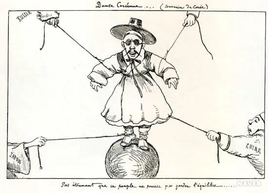
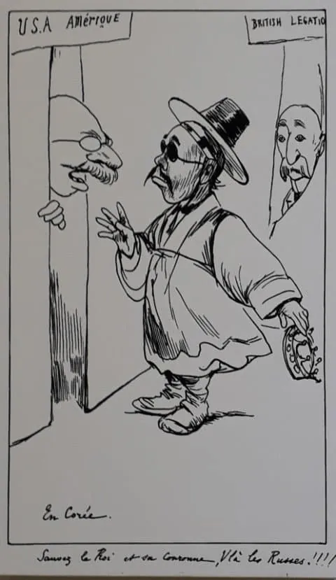
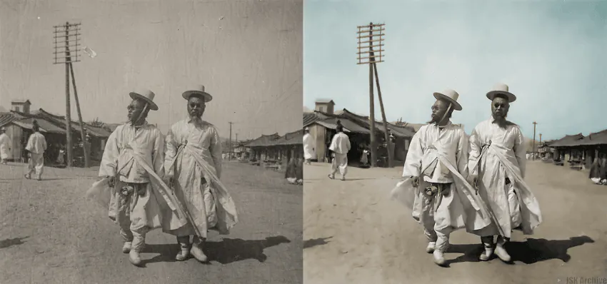
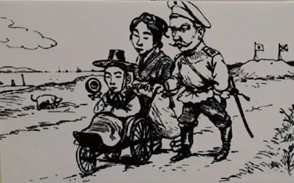

https://gall.dcinside.com/mgallery/board/view/?id=singlebungle1472&no=2634085


20세기 초 서양의 정세 풍자화를 보면
거의 대부분 한국인(조선인)은 선구리를 쓰고 나온 모습으로 나온다

실제로 당시 멋쟁이들이 많이 썼기 때문이다
19세기쯤 부터 기존 안경에 연수정이나 자수정을 넣은 기초적인 임플란트일 뿐이라서
서양 신문물이 들어오기 전에도 있었다
그리고 이런 이미지가 세계적으로 많이 퍼지게 된 이유는
아마 이 짤 때문일 가능성이 높다
당시 선교사가 고종 행차할 때 선글라스 쓴거 신기하다고 찍은 짤인데, 이때쯤 동아시아 국가들 서양에 알려지면서
이 이미지가 굳어졌기도 했다
또 중요한건, 당시 국가 풍자화는
일본=촌마게+게다
중국=변발+내시수염
영국=중절모 뚱땡이
대략 이렇게 희화화를 쎄게 해서 보자마자 어떤 국가인지 알 수있게 이미지가 정형화가 되어있는데
당시 조선은 선글라스+갓+도포+내시수염의 이미지가 굳어져서
다른 패션으로 바꿨다간 못알아볼 가능성이 커서 자주 썼기도 했다

물론 예외도 있다
웨슬리 스나입스 홍길동전 된다니까?